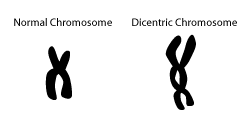

Dicentric Chromosome

- Significant radiation exposure can cause abnormal DNA replication and dicentric chromosomes.
- Increasing exposure dose will produce increasing numbers of abnormal chromosomes.
- Techniques have been described for measuring the number of dicentric chromosomes in peripheral blood lymphocytes.
- The number of dicentric chromosomes in peripheral blood lymphocytes is correlated with and can be used to estimate exposure dose.
- Counting the number of dicentric chromosomes is part of clinical biodosimetry, but it is time consuming and highly technique dependent.
<< Home